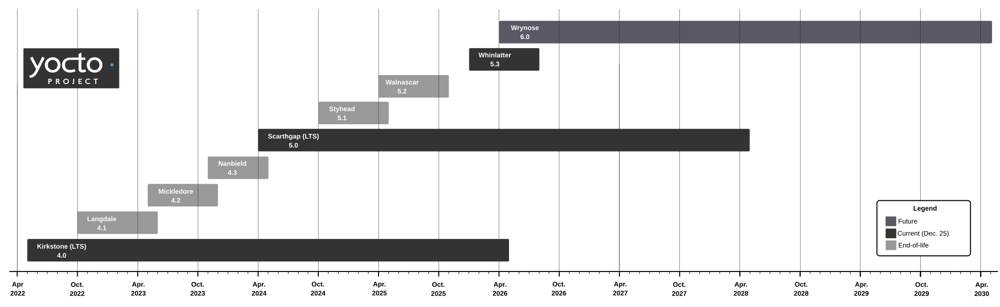

4 Rilasci di Yocto Project e Iter dei Rilasci Stabili
Il processo di rilascio di Yocto Project è prevedibile e consiste in rilasci principali [major] e secondari [minor] (punto). Questo breve capitolo fornisce informazioni su come vengono denominati i rilasci, sul loro ciclo di vita e sulla loro stabilità.
4.1 Cadenza dei Rilasci Major e Minor
Yocto Project ha rilasci "major" (ad esempio la 6.1) con una cadenza di sei mesi, all'incirca ad aprile e ottobre di ogni anno. Ecco alcuni esempi di rilasci principali di YP con i relativi nomi in codice. Consultare la sezione "Nomi in Codice delle Release Major" per informazioni sui nomi in codice utilizzati per i rilasci principali [major].
4.1 ("Langdale")
4.0 ("Kirkstone")
3.4 ("Honister")
Sebbene la cadenza non sia mai perfetta, questa tempistica facilita rilasci regolari con cicli di QA rigorosi, senza sovraccaricare gli utenti con troppi nuovi rilasci. La cadenza di rilascio è prevedibile ed evita molte festività importanti in diverse aree geografiche.
Yocto project rilascia versioni minori (point) in modo non programmato, solitamente in seguito all'accumulo di un numero sufficiente di correzioni o miglioramenti significativi alla versione principale associata. Alcuni esempi di versioni minori precedenti sono:
4.1.3
4.0.8
3.4.4
Il punto della release indica un punto nel ramo della versione principale in cui un ciclo completo di controllo qualità e processo di rilascio convalida il contenuto del nuovo ramo [branch].
Nota
È importante notare che le patch possono essere integrate nei rami della versione stabile non appena disponibili.
4.2 Ciclo di Sviluppo
Come spiegato nella precedente sezione Cadenza dei Rilasci Major e Minor, una nuova release viene rilasciata ogni sei mesi.
Durante questo periodo di sei mesi, Yocto Project rilascia quattro release "Milestone" che rappresentano punti di riferimento distinti. Le release milestone vengono testate attraverso il processo Testing and Quality Assurance, che aiuta a individuare i problemi prima del rilascio effettivo.
L'intervallo di tempo tra le release milestone può variare, ma in genere sono distribuite uniformemente durante questo periodo di sei mesi.
Queste release milestone sono contrassegnate da una "M" maiuscola dopo il nome della release futura. Ad esempio, le release milestone "6.1M1", "6.1M2" e "6.1M3" vengono rilasciate prima della release "6.1" vera e propria.
Nota
La quarta milestone (M4) non viene effettivamente rilasciata e annunciata, ma rappresenta un momento in cui il team di Controllo Qualità avvia il processo di Testing and Quality Assurance prima di etichettare e rilasciare la versione finale.
Dopo la terza release (M3), Yocto Project entra in Feature Freeze. Ciò significa che i manutentori di OpenEmbedded-Core (OE-Core), BitBake e altri repository centrali smettono di accettare modifiche significative sul branch "master". Le modifiche che possono essere accettate sono piccoli aggiornamenti ai componenti principali e correzioni di bug/sicurezza.
Durante il periodo di Feature Freeze, viene creato e gestito separatamente un nuovo branch [ramo] per testare le nuove funzionalità e i miglioramenti ricevuti dai collaboratori, ma queste modifiche verranno integrate nel branch master solo dopo il rilascio della release.
4.3 Nomi in Codice delle Release Major
Ogni release major riceve un nome in codice che la identifica nei I Repository del Codice Sorgente di Yocto Project. L'idea è che i branche di Metadata con lo stesso nome in codice siano probabilmente compatibili e quindi funzionino insieme.
Nota
I nomi in codice sono associati alle release principali perché un numero di release di Yocto Project (ad esempio 6.1) potrebbe entrare in conflitto con un determinato layer o schema di versioning aziendale. I nomi in codice sono univoci, interessanti e facilmente identificabili.
Anche alle release viene assegnata una versione nominale, ma il nome in codice viene utilizzato nei repository per questo scopo. Informazioni sulle release e sui nomi in codice di Yocto Project si trovano nella pagina pagina dei rilasci.
La nostra Informazioni sulla Release descrive in dettaglio come migrare da una release di Yocto Project alla successiva.
4.4 Iter per il Rilascio Stabile
Una volta rilasciata, la release entra nel processo di rilascio stabile, momento in cui viene assegnata una persona come responsabile della manutenzione per quella release stabile. Questo responsabile monitora l'attività relativa alla release, esaminando e gestendo le patch proposte e le attività di backport. Solo le correzioni e i miglioramenti che sono stati prima applicati sul branch "master" (ovvero il ramo corrente in fase di sviluppo) vengono presi in considerazione per il backporting in una release stabile.
Nota
L'attuale politica di Yocto Project in merito al backporting prevede di considerare solo le correzioni di bug e le patch di sicurezza. La politica stabilisce che le nuove funzionalità non vengono retroportate in una release stabile. Questa politica implica che gli aggiornamenti generici di versione delle ricette difficilmente verranno accettati per il backporting. L'eccezione a questa politica si verifica quando esiste una valida ragione, ad esempio quando la correzione è anche l'approccio preferito a monte [upstream].
4.5 Politiche di Accettazione delle Patch per le Release Stabili/LTS
Tutte le modifiche devono essere già state accettate nella release master corrente e in qualsiasi altra release ancora all'interno del suo periodo di supporto stabile.
Accettabile:
Correzioni di sicurezza e CVE
Correzioni di bug
Aggiornamenti di versione che seguono una serie stabile o LTS upstream allineata alla release originale (in base alla compatibilità). Per maggiori dettagli, consultare Aggiornamenti a Release Stabili.
Nota
Una volta che UPSTREAM_STABLE_RELEASE_REGEX è stato accettato per una ricetta, gli aggiornamenti di versione che corrispondono al modello accettato sono considerati accettabili per default (con la possibilità di rifiutarli se la versione upstream non segue le proprie linee guida per le versioni stabili).
Potenzialmente accettabili:
Correzioni per rendere il codice sorgente compatibile con le distribuzioni appena rilasciate, ad esempio aggiornamenti del tarball uninative o correzioni di compilazione per una nuova versione di GCC sul Build Host.
Inaccettabile:
Aggiornamenti di versione generali
Nuove funzionalità
Modifiche all'ABI/API
Miglioramenti e refactoring dei metadati, a meno che non siano una dipendenza di una correzione necessaria
Nota
Eventuali eccezioni a queste regole devono essere approvate dal TSC.
4.6 Aggiornamenti a Release Stabili
Alcuni progetti upstream mantengono branch stabili che includono solo correzioni di bug e patch di sicurezza, in modo simile alla politica di rilascio stabile di Yocto Project. Per le ricette che seguono tali progetti upstream, è possibile eseguire stable point release upgrades [aggiornamenti a release stabili] (ad esempio, l'aggiornamento dalla versione 1.0.2 alla 1.0.3) anziché accettare solo patch retroportate. Questo è il meccanismo alla base della politica "accettabili: aggiornamenti di versione che seguono una serie stabile upstream" descritta sopra.
4.6.1 Criteria for Qualifying Upstreams
Setting UPSTREAM_STABLE_RELEASE_REGEX for a recipe means that certain version upgrades can be confidently treated as stable point upgrades under OpenEmbedded's criteria. The Automated Upgrade Helper (AUH) will then automatically send patches to upgrade recipes with this variable set during stable releases.
Nota
Patches to upgrade recipes without this variable may still be submitted for stable branches, but the barrier for acceptance is high. The commit message needs to justify that the version upgrade follows our stable branch policy or that there is an exceptional reason for taking the upgrade.
A recipe may have UPSTREAM_STABLE_RELEASE_REGEX set based on the following criteria:
Upstream stable branches exist --- the upstream project maintains branches named with a stable version component, and there is evidence that these branches only collect bug-fix and security-fix changes (no new features or ABI/API breakage). For example, util-linux version
2.41.3has three parts in its version and upstream has branches likestable/v2.41with two parts. This demonstrates that bumps in the third part (e.g.2.41.3to2.41.4) are stable point releases. Similarly, systemd maintainsstable/v259-stable.
And at least one of the following:
Upstream maintainer confirmation --- the upstream project's maintainer explicitly confirms that a bump in a certain part of the version is bug-fix only.
Clear historical or common-sense evidence --- the project's change history clearly shows that a certain class of version bump is bug-fix only, or it is widely understood convention. For example, openssh's
psuffix increments (10.2p1to10.2p2) and kmod's patch-level bumps are historically bug-fix only releases.
Nota
Patches to set UPSTREAM_STABLE_RELEASE_REGEX are sent against the master branch first and follow the normal review process. Once accepted on master they may be backported to stable release branches. Exceptions may be made when necessary, e.g. setting UPSTREAM_STABLE_RELEASE_REGEX on a stable branch for a recipe which has since been removed on master.
4.6.2 How Stable Release Regexes Work
The stable point upgrade mechanism uses a filter regex to constrain the upstream version check so that only versions within the same stable series are considered. When a recipe sets UPSTREAM_STABLE_RELEASE_REGEX, the version-checking infrastructure in BitBake's fetchers (git, wget, crate) applies that regex to filter discovered upstream versions. Only versions matching the regex are considered as upgrade candidates.
For example, if a recipe is currently at version 1.4.2 and the regex is
^1\.4(\.\d+)*$, then version 1.4.7 would be a valid upgrade candidate
but 1.5.0 would not.
For recipes whose version uses a dot-separated scheme, the upstream-stable-release-point class can automatically generate this regex. For other versioning schemes, set UPSTREAM_STABLE_RELEASE_REGEX directly in the recipe.
4.7 Long Term Support Releases
While stable releases are supported for a duration of seven months, some specific ones are now supported for a longer period by the Yocto Project, and are called Long Term Support (LTS) releases.
When significant issues are found, LTS releases allow to publish fixes not only for the current stable release, but also to the LTS releases that are still supported. Older stable releases which have reached their End of Life (EOL) won't receive such updates.
This started with version 3.1 ("Dunfell"), released in April 2020, which the project initially committed to supporting for two years, but this duration was later extended to four years.
A new LTS release is made every two years and is supported for four years. This offers more stability to project users and leaves more time to upgrade to the following LTS release.
The currently supported LTS releases are:
Version 6.0 ("Wrynose"), released in May 2026 and supported until April 2030.
Version 5.0 ("Scarthgap"), released in April 2024 and supported until April 2028.
See https://wiki.yoctoproject.org/wiki/Stable_Release_and_LTS for details about the management of stable and LTS releases.
This documentation was built for the Blacksail release.


Nota
In some circumstances, a layer can be created by the community in order to add a specific feature or support a new version of some package for an LTS release. This is called a Mixin layer. These are thin and specific purpose layers which can be stacked with an LTS release to "mix" a specific feature into that build. These are created on an as-needed basis and maintained by the people who need them.
Policies on testing these layers depend on how widespread their usage is and determined on a case-by-case basis. You can find some Mixin layers in the meta-lts-mixins repository. While the Yocto Project provides hosting for those repositories, it does not provide testing on them. Other Mixin layers may be released elsewhere by the wider community.
4.8 Testing and Quality Assurance
Part of the Yocto Project development and release process is quality assurance through the execution of test strategies. Test strategies provide the Yocto Project team a way to ensure a release is validated. Additionally, because the test strategies are visible to you as a developer, you can validate your projects. This section overviews the available test infrastructure used in the Yocto Project. For information on how to run available tests on your projects, see the "Performing Automated Runtime Testing" section in the Yocto Project Test Environment Manual.
The QA/testing infrastructure is woven into the project to the point where core developers take some of it for granted. The infrastructure consists of the following pieces:
bitbake-selftest: A standalone command that runs unit tests on key pieces of BitBake and its fetchers.sanity: This automatically included class checks the build environment for missing tools (e.g.
gcc) or common misconfigurations such as MACHINE set incorrectly.insane: This class checks the generated output from builds for sanity. For example, if building for an ARM target, did the build produce ARM binaries. If, for example, the build produced PPC binaries then there is a problem.
testimage: This class performs runtime testing of images after they are built. The tests are usually used with QEMU to boot the images and check the combined runtime result boot operation and functions. However, the test can also use the IP address of a machine to test.
ptest: Runs tests against packages produced during the build for a given piece of software. The test allows the packages to be run within a target image.
oe-selftest: Tests combinations of BitBake invocations. These tests operate outside the OpenEmbedded build system itself. Theoe-selftestcan run all tests by default or can run selected tests or test suites.
Originally, much of this testing was done manually. However, significant effort has been made to automate the tests so that more people can use them and the Yocto Project development team can run them faster and more efficiently.
The Yocto Project's main Autobuilder publicly tests each Yocto Project release's code in the openembedded-core, meta-yocto and bitbake repositories. The testing occurs for both the current state of the "master" branch and also for submitted patches. Testing for submitted patches usually occurs in the "master-next" branch in the openembedded-core, meta-yocto and bitbake repository.
Nota
You can find all these branches in the I Repository del Codice Sorgente di Yocto Project.
Testing within these public branches ensures in a publicly visible way that all of the main supposed architectures and recipes in OE-Core successfully build and behave properly.
Various features such as multilib, sub architectures (e.g. x32,
poky-tiny, musl, no-x11 and so forth),
bitbake-selftest, and oe-selftest are tested as part of the QA
process of a release. Complete testing and validation for a release
takes the Autobuilder workers several hours.
Nota
The Autobuilder workers are non-homogeneous, which means regular testing across a variety of Linux distributions occurs. The Autobuilder is limited to only testing QEMU-based setups and not real hardware.
Finally, in addition to the Autobuilder's tests, the Yocto Project QA team also performs testing on a variety of platforms, which includes actual hardware, to ensure expected results.